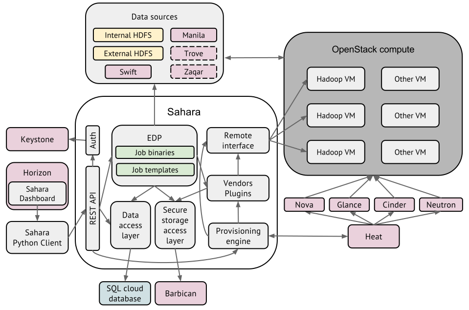

Architecture¶
{kind=link}

The Sahara architecture consists of several components:
- Auth component - responsible for client authentication & authorization, communicates with the OpenStack Identity service (keystone).
- DAL - Data Access Layer, persists internal models in DB.
- Secure Storage Access Layer - persists the authentication data like passwords and private keys in a secure storage.
- Provisioning Engine - component responsible for communication with the OpenStack Compute (nova), Orchestration (heat), Block Storage (cinder), Image (glance), and DNS (designate) services.
- Vendor Plugins - pluggable mechanism responsible for configuring and launching data processing frameworks on provisioned VMs. Existing management solutions like Apache Ambari and Cloudera Management Console could be utilized for that purpose as well.
- EDP - Elastic Data Processing (EDP) responsible for scheduling and managing data processing jobs on clusters provisioned by sahara.
- REST API - exposes sahara functionality via REST HTTP interface.
- Python Sahara Client - like other OpenStack components, sahara has its own python client.
- Sahara pages - a GUI for the sahara is located in the OpenStack Dashboard (horizon).